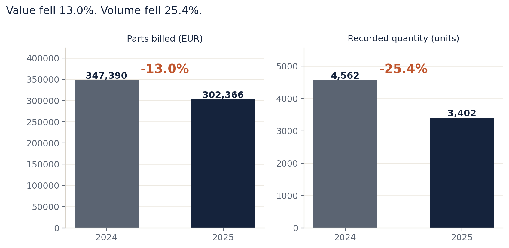
Commercial vision and participation · 23 September 2026 · Proposed product, for review
A commercial programme that gives distributors and dealers tools worth using, and earns the information that makes those tools better.
Supersedes the Commercial Vision 3.0 of 22 September 2026 and the Commercial Tools Edition of 22 September 2026. Both are withdrawn. This edition carries the scope boundary that the Commercial Tools Edition stated and the 3.0 edition omitted, and it adopts the five-tool portfolio in place of the earlier three-application range.
Three things can be decided in the next two weeks, and each has its own chapter. Everything else is support for those three.
| The three decisions | Where | What is being decided |
|---|---|---|
| 1. Price concession and campaign support | Chapter 4 | Whether a named campaign line, with a minimum campaign size, is funded |
| 2. Dealer and distributor participation | Chapter 8 | Whether the first ten invited dealers are approached as designed |
| 3. The opening product | Chapter 9 | Which two tool capabilities are built first |
Read chapters 1 to 4 and you have the commercial case and the money. Read chapter 8 for what the participants will actually do. Chapters 5 to 7 are the product. Chapters 10 to 14 are method and reference, written so that a reader can check any number in this paper back to its source.
Historical observations keep their original source period. Tool designs, journeys and participation figures are proposals as of 23 September 2026. Numerical scenarios are arithmetic on stated inputs; they are not forecasts of customer response and not records of an achieved result.
What is measured, inferred, proposed and unknown. Every substantive claim carries one of four labels. Measured is counted in a source file named in the footnote. Inferred is a conclusion drawn from measured data. Proposed is a design or a decision not yet taken. Unknown is recorded as unknown and is not filled with an assumption. A reader who finds an unlabelled number should treat that as an error in this paper and not as a figure to use.
What the programme is. Universe connects four things Isuzu already holds or already receives: product knowledge (AIM), the composition of the parts business, the dealer self-assessment (IDS) and the market and fleet context (PRISM). It turns them into five tools a distributor or dealer opens by choice. The commercial argument is not that analysis is good. It is that the participant receives something it wants, and therefore keeps supplying the context that makes the next answer better.
What the programme is not. Routine availability enquiries, ordinary part and BVP lookups, day-to-day quotation handling and support administration stay in the existing business. They are not modules of Universe, not rewards for participation and not bargaining instruments for more data. The full boundary is in section 1.2.
The commercial problem being solved. ISZE has asked distributors for information for many years with insufficient visible value returned. A reporting obligation can start an exchange. Only a useful tool continues it. The 2025 arrangement tied a share of the normal distributor rebate to a major-KPI submission; that is the floor, not the mechanism.
The three decisions on the table this month.
| Decision | Recommendation | What has to be true first |
|---|---|---|
| Fund campaign support | A named line of €60,000 to €90,000 inside the existing €100,000 route, with a minimum campaign size of €150,000 of eligible billing | The campaign-selection rule is agreed and the first eligible campaign is named |
| Approach ten dealers | Yes, as designed in chapter 8: arrive with a finished own-business review and ask for correction, not for data | A prepared review exists from data already held |
| Build first | AIM Commercial Atlas and IDS Development Studio | The classification release is pinned to a named file and version |
What the paper deliberately does not claim. No realised return. No approved budget. No forecast of incremental sales. No participant has accepted anything. The one place where the paper quantifies what the investment must earn is chapter 4, and it states the hurdle rather than a predicted outcome.
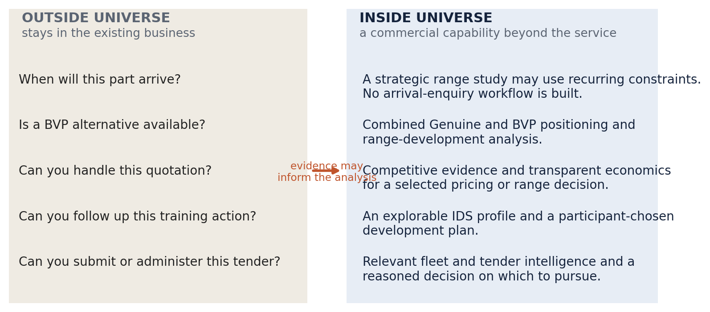
Universe should give distributors and dealers tools that change how they understand and develop their parts business. The user discovers a range issue, understands a commercial movement, compares alternatives or chooses an improvement directly in the tool. Opening a request for somebody else to answer is not the defining interaction.
The participant return comes first. A distributor receives a clearer basis for national and network priorities. A dealer receives a useful view of its own supported business and a set of development choices it controls. ISZE receives better product and market understanding through an exchange the participant can judge valuable in its own right. More purchases from ISZE alone do not establish that a dealer gained anything.
A normal service is not a reward for participation, and participation is not the price of a normal service. No participant should have to provide sales history, workshop records, margins or customer details to receive the service it should already receive.
| Outside Universe — stays in the existing business | Inside Universe — a commercial capability beyond the service |
|---|---|
| When will this part arrive? | Recurring, evidenced constraints may inform a strategic range study. No arrival-enquiry workflow is built. |
| Is a BVP alternative available? | Combined Genuine and BVP positioning, product composition and range-development analysis. |
| Can you handle this quotation? | Competitive evidence and transparent economics for a selected pricing or range decision. |
| Can you follow up this training action? | An explorable IDS profile and a participant-chosen development plan. |
| Can you submit or administer this tender? | Relevant fleet and tender intelligence and a reasoned decision about which opportunities to pursue. |
The test is not whether a normal service can be made more sophisticated. It is whether the proposed tool adds a commercial capability beyond that service, helping a user see something materially useful, compare a choice or evaluate an initiative without creating a parallel operational process.
Keep the evidence when it improves the analysis. Do not import the day-to-day service into the product.
Two reasons, and the second is the one that decides whether a distributor says yes.
First, scope discipline protects the pilot. A programme that also answers availability questions is judged on availability response times, and it will lose that comparison against a system that already does it.
Second, the boundary is the offer. The sentence that changes how a distributor's parts manager reads the approach is: we are not asking you to feed a support desk, and the support desk does not get better or worse depending on what you send us. That is what distinguishes this from the data requests of the past several years.
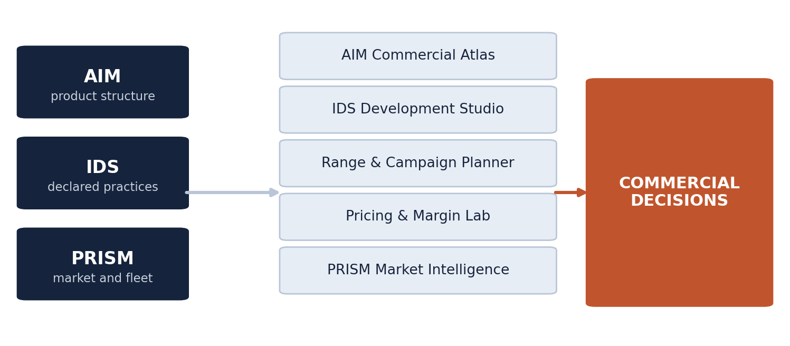
The tools answer different questions, and a participant usually starts with one of them. A single monolithic application would force every user through the same opening screen and would make the first experience depend on evidence the participant may not have.
| Tool | The question it answers | Primary evidence | Designed for |
|---|---|---|---|
| AIM Commercial Atlas | What is really changing in my parts business, and where? | Purchasing history and product classification | Distributor parts manager, dealer principal |
| IDS Development Studio | What should I improve, and what has moved? | Dealer self-assessment and development records | Dealer principal, distributor network manager |
| Range & Campaign Planner | Which products belong in this initiative, and for whom? | Atlas selection plus account coverage | Distributor commercial lead |
| Pricing & Margin Lab | What does this commercial trade-off do to revenue and margin? | Comparable evidence and stated unit economics | Distributor commercial lead, ISZE commercial team |
| PRISM Market Intelligence | Where should we concentrate effort? | Historical fleet and source-dated opportunities | Distributor management, ISZE commercial team |
Three applications show the portfolio doing commercial work. They are examples of what the programme enables, not a closed catalogue.
Coordinated tenders. A distributor qualifies a local opportunity; the relevant Isuzu entities assemble a combined vehicle and aftersales proposition; headquarters receives a decision brief that makes the requested decision unmistakable. The value is a stronger joint proposition and less reconstruction between functions.
IDS development progress. The dealer explores its actual assessment, chooses a development priority with its distributor, records milestones with evidence, and sees progress separately from any score. The value is that the assessment becomes a management tool rather than an archive.
Deal of the Day. ISZE helps a distributor prepare a specific, time-limited commercial offer: a reasoned product selection, a relevant audience, transparent economics and a way to learn from what follows. The value is in the preparation behind the offer, not in the discount.
A common selection — entity, account, period, product range, source basis, permitted audience — lets a user carry a meaningful selection from the Atlas into a range plan or a pricing scenario without reconstructing it. An IDS plan need not use pricing data. A pricing study need not use an assessment.
Connect the tools because the next decision becomes better, not because every component needs an arrow to every other component.
A distributor can have a stable parts total while the composition changes considerably. Some ranges expand, others are bought less often, and a change in mix conceals a change in quantity. A dealer may see these movements locally without the classification or the wider context needed to interpret them.
Figure 1 is the whole argument on one chart. ISZE parts billed to Isuzu Truck UK in the brake-pad source category fell from €347,389.58 in calendar 2024 to €302,366.25 in calendar 2025, a reduction of €45,023.33 or 13.0%. Recorded quantity fell from 4,562 to 3,402, a reduction of 25.4%. Measured against the supplied source-category aggregate, snapshot 19 September 2026; arithmetic rechecked 23 September 2026.
Value fell less than volume. A revenue-only view would suggest a demand problem, a quantity-only view would suggest a pricing problem, and neither alone tells a distributor where to look. The contextual fleet is 22,389 ITUK trucks on the stated calendar-2025 spend-per-truck basis. It is not the eligible population for every pad reference, and it is not divided among dealers.
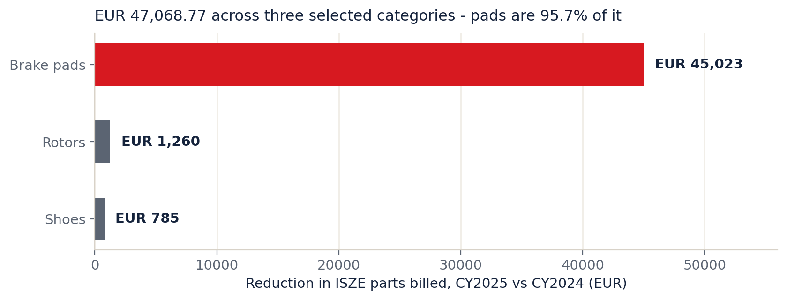
Across the three selected source categories — brake pads, rotors and shoes — the combined reduction is €47,068.77, of which pads account for 95.7%. Measured, same source and period.
This changes the starting decision from "braking products are down" to "brake pads are down". It does not support applying one remedy to every braking product, and it does not make the reduction recoverable revenue.
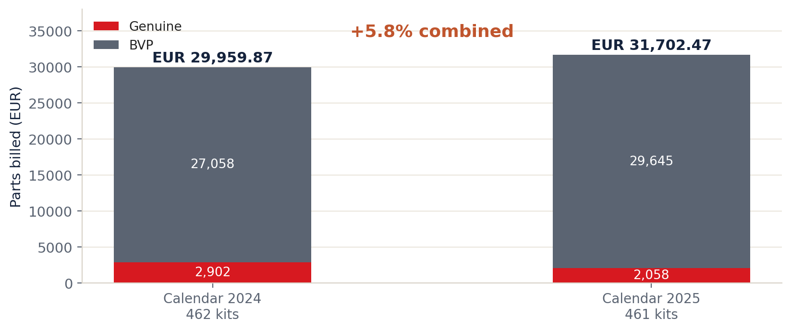
For I Motors (Portugal), combined clutch-kit billing rose from €29,959.87 in calendar 2024 to €31,702.47 in 2025, up €1,742.60 or 5.8%. Genuine billing fell from €2,901.92 to €2,057.86 while BVP rose from €27,057.95 to €29,644.61. Recorded quantity was almost unchanged: 462 kits in 2024, 461 in 2025. Measured, same source and period.
A Genuine-only view would have suggested a recovery campaign for a line whose total business grew. The tool exists to prevent that mistake as much as to find opportunities. The 8,176-vehicle Portuguese context is a market figure on the supplied basis; it is not the eligible fleet for these kits, and it is not divided among dealers.
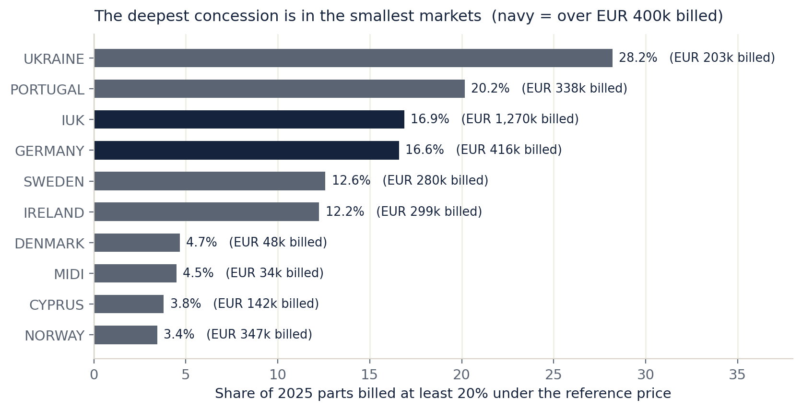
Measured. PMS billed €6.65M across 24 distributors in 2025. Of that, 8.4% (€558,851) sat at least 20% under the reference price and 2.8% at least 30% under. In 2024 the same shares were 13.0% and 4.0% of €7.11M. The reduction in deep-discount share from 13.0% to 8.4% is a real and favourable movement.
It is also why a campaign-support mechanism has to be designed carefully, and the chart shows the trap. The distributors with the highest deep-discount share are not the largest ones: Ukraine 28.2% of €203k, Portugal 20.2% of €338k, IUK 16.9% of €1.27M, Germany 16.6% of €416k. A programme that pays per campaign without a size floor would spend most of its money in the smallest markets. Chapter 4 sets the floor.
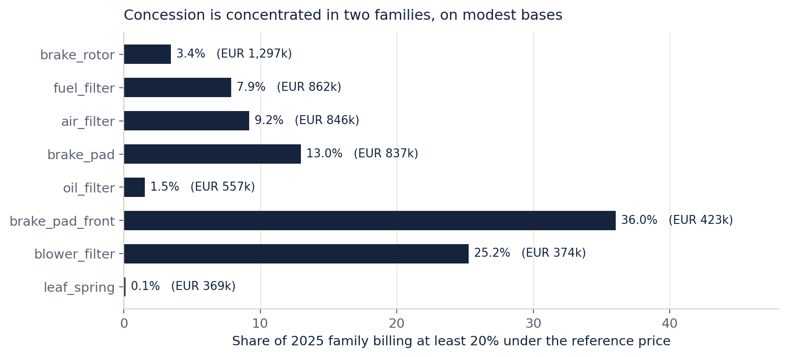
Measured. Two observations matter commercially. Brake-pad-front (36.0% of €423k) and blower filter (25.2% of €374k) carry large deep-discount shares on modest billed bases, which is the shape of a handful of large deals rather than a broad pricing position. Brake rotors (3.4% of €1.30M) and oil filters (1.5% of €557k) carry almost none, which means their pricing is settled and their opportunity, if one exists, is not price.
This is the chapter the funding decision rests on. It states four things: the denominator, the hurdle, the price of a dealer, and what campaign support should cost. It does not forecast a return.
| Basis | Value | What it is |
|---|---|---|
| Network parts billed to distributors, calendar 2025 | €32,381,311.55 | GPS parts billed across 22 distributors on the supplied basis |
| Of that, the 18 markets carrying a fleet figure | €30,756,771.61 | Same source, rows with a vehicle-in-service count |
| The €100,000 route as a share of one year's network billing | 0.31% | Arithmetic on the lines above |
| The €300,000 route on the same basis | 0.93% | Arithmetic on the lines above |
Measured, GPS distributor file, 2025 rows; arithmetic 23 September 2026.
The programme is therefore proposing to spend between three-tenths of one percent and nine-tenths of one percent of a single year's parts billing. That is the correct size for a pilot and the wrong size for a platform build. It also means the programme does not need to move the whole business to justify itself, and it must not be presented as though it will.
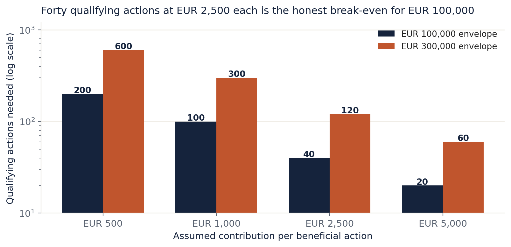
If a beneficial action is worth €500, the €100,000 envelope requires 200 of them and the €300,000 envelope requires 600. At €5,000 per action, the same envelopes require 20 and 60. Proposed and hypothetical arithmetic; contribution per action is an assumption, not an estimate of dealer profitability.
Two consequences follow, and they are the reason this section exists:
€25,000 against a €100,000 envelope. The pilot's job is to establish whether the mechanism produces qualifying actions at all.
belongs in the funding discussion, not in a footnote after approval.
The hurdle is higher again when internal effort and continuing operation sit outside the envelope. Report the cash-only comparison and the fully costed comparison separately.
| Dealer basis | Count | Consequence for the €15,000 enablement line |
|---|---|---|
| Dealers with a recorded IDS assessment in the ISZE network file | 519 | €28.90 per dealer if spread across the known estate |
| Portugal only | 16 | €937.50 per dealer if confined to the pilot market |
| ITUK and Portugal together | 60 | €250.00 per dealer |
| IDS networks represented in the file | 19 | France 84, Spain 45, UK CV 44, UK LCV 43, Italy 41, Norway 38, Belgium 34, Greece 34, Israel LCV 29, Poland 23, Switzerland 22, Denmark 20, Hungary 19, Portugal 16, Romania 15, Netherlands 9, plus one each in Malta, Cyprus and Luxembourg |
Measured, ISZE IDS dealer network file of 20 September 2026, 519 rows across 19 networks; arithmetic 23 September 2026.
This table decides whether dealer enablement is a programme or a gesture. €15,000 spread across 519 dealers buys nothing that survives contact with a dealer principal. €15,000 spent as twenty-five accepted setup tasks at €600 in two pilot markets buys twenty-five completed onboarding experiences. The recommendation in chapter 9 is the second.
The mechanism matters more than the headline. Two structures are worth testing and three are not.
| Mechanism | Additive by construction | What it costs on a €120,000 campaign base | Recommended |
|---|---|---|---|
| Unit concession on additional-only volume against a documented baseline | Yes | 20 additional units at a 5% concession on a €30 gross profit is about €120 | Test first |
| Fixed campaign contribution paid on eligible campaign activity | No | Up to the fixed amount | Test |
| Unit concession on all campaign volume including the base | No | Five times the additional-only cost on the same volume | Do not use as standard |
| Payment per submitted record or per disclosed field | No, and it rewards disclosure | Scales with data, not with decisions | Do not use |
| Prize or award for the largest sales total | No | Cannot be compared across business sizes | Do not use |
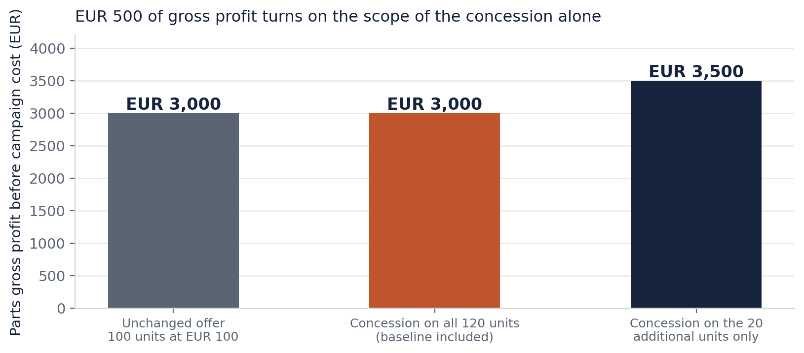
The arithmetic is the strongest single argument for an additional-only structure. On a 100-unit baseline at €100 net with €70 parts cost, a 5% concession applied to all 120 units after the campaign produces €3,000 of parts gross profit. Applied only to the 20 additional units, with the baseline retaining its original price, it produces €3,500. The €500 difference is scope alone and assumes no demand response. Hypothetical arithmetic on stated inputs, not an Isuzu price, offer or forecast.
| Line | Proposed | Basis | What has to be demonstrated |
|---|---|---|---|
| Campaign support | €35,000 to €50,000 | 8 to 12 campaigns at €2,500 to €5,000, against the minimum-size filter | Qualifying campaigns exist, and contribution is measured on the same scope before and after |
| Dealer enablement | €15,000 to €25,000 | 25 to 40 accepted setup tasks at €600 | A documented task, an accepted deliverable, and the later eligible-use test |
| Independent evaluation | €10,000 to €15,000 | Two waves at 90 and 180 days, including returns and displacement | The result is published whether it is favourable or not |
| Total additional campaign cash | €60,000 to €90,000 | Inside the existing €100,000 route, without drawing on the engineering or assurance lines | — |
| Internal analytical preparation | Not costed here | Must be shown as internal time, not assumed free | Named owner and a stated allocation |
Proposed allocations against the mechanism in this chapter. They are a recommendation inside the existing €0 / €100,000 / €300,000 planning envelopes, not a new budget request and not an approved expenditure.
What the investment must earn, stated once. At the paper's own hurdle of €2,500 contribution per beneficial action, the recommended €60,000 to €90,000 needs 24 to 36 qualifying actions before internal costs. The pilot will not produce that. It will produce the first real measurement of the qualifying rate, and that rate is the number on which any expansion should be decided.
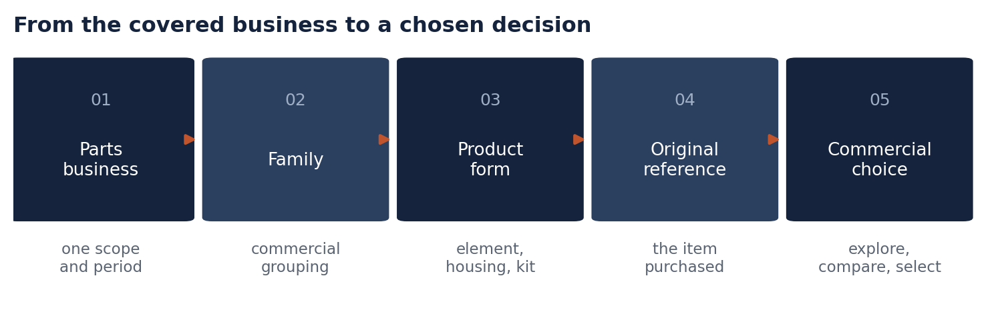
The Atlas turns original part references into a navigable commercial range. The user moves from distributor or purchasing-account activity into families, product forms and exact references, keeping the selected period and sales stage intact.
The depth comes from keeping distinctions visible: value against quantity where monetary evidence exists; continuing against newly active references; Genuine against BVP; product form such as element, housing, assembly or kit; and the contribution of individual references to a family movement. A validated successor can be shown beside the original transaction without erasing the code that was actually purchased.
A product is not an opportunity merely because the participant has not bought it. The Atlas distinguishes no recorded purchase from a documented range gap, a coverage exclusion, a number change and an irrelevant application.
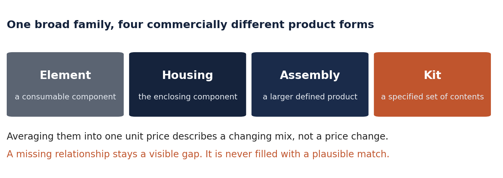
Element, housing, assembly and kit can sit near each other in a product tree while having very different prices and use. Combining them into one average unit price describes a changing mix rather than a change in price. A missing relationship stays a visible gap in the analysis; it is not filled with a plausible match based on similar wording.
The result is a saved commercial selection: the source-defined range, the observed pattern, alternative explanations, missing evidence and a proposed choice. The user may retain the range, investigate further, prepare a campaign, compare economics or take no action.
The studio turns the dealer self-assessment into a practical development tool rather than a questionnaire archive or an action-chasing service. The user explores the actual assessment, sees the meaning behind each section and selects a development priority it controls.
The first useful output is an understandable assessment profile: actual question wording, response, section, questionnaire version and available assessment period. Missing, unanswered and inapplicable items remain distinct. An import date must not replace an absent assessment date. Strengths are shown as visibly as weaknesses.
A comparison may show a dealer's position against an appropriate, permitted group only where the questionnaire and scoring basis are compatible. There is no distributor audit score and no new universal league table.
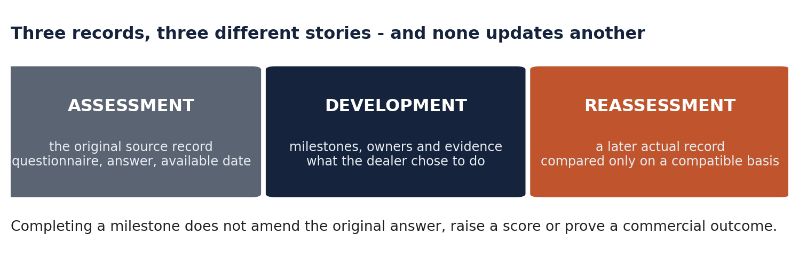
Progress has three separate meanings, and the tool never lets one update another: completing a development initiative shows the agreed work occurred; a later comparable assessment shows a change in recorded answers; a commercial improvement requires its own measurement. The tool therefore remains useful before a second assessment exists.
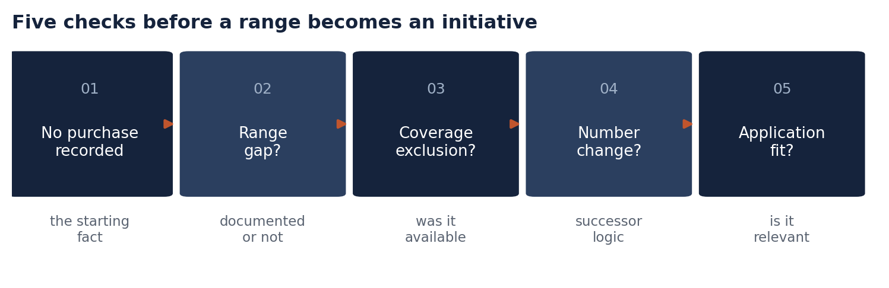
The planner takes an analytical selection and turns it into a proposed range or campaign decision: which products belong in the initiative, which participant or vehicle segment is relevant, how the Genuine and BVP offer should be positioned, and what would demonstrate that the initiative was useful. Its output is a campaign brief the participant can use. Execution stays in the existing business; Universe does not become an email-marketing system, an order platform or a quotation desk.
The lab combines supported competitive positioning with user-controlled scenarios. It is a tool for evaluating a selected offer or range, not a service for answering routine quotations.
Parts gross profit is defined as revenue less the parts purchase cost of the quantities sold. Freight, duty, overheads, distributor rebates and other operating costs are excluded from that particular measure, and a separate initiative-economics view considers additional costs once without silently changing the definition.
The quantity needed to preserve revenue or gross profit is an arithmetic threshold, not a forecast. A participant may test its own quantities or supported commitments without claiming estimated elasticity. Sensitive selling prices and margins further down the channel are not mandatory contributions to ISZE: a private calculation can return only a permitted aggregate, or no shared financial result at all.
PRISM separates measured parts billed, historical vehicles in service and modelled expected demand. Spend per truck is a measured purchasing rate on a stated fleet basis. Target spend and service expectations depend on assumptions and technical applicability. A modelled gap is not automatically recoverable sales and is not a programme business case.
A national vehicle total cannot be allocated to dealers by sales, visits or geography. A part that serves several vehicle classes remains shared unless exclusive applicability establishes the attribution. A workshop sample is not a dealer's complete fleet.
For tender intelligence, the useful output is a qualified shortlist: source and observation date, actual scope, known deadline, relevance and a decision about pursuit. A tender's overall value is not expected Isuzu parts revenue, and an award is not parts billed.
This chapter states what dealers and distributors are being asked to do, what they receive, and how likely each step is to happen. The score is a judgement on this design, not a measurement, and it is given so that the design can be argued with.
The dealer's reason to participate cannot be a reporting obligation. ISZE has no direct commercial relationship with the dealer, the distributor already receives the dealer's purchasing information, and the dealer is being asked to spend time at a parts counter where a customer is standing.
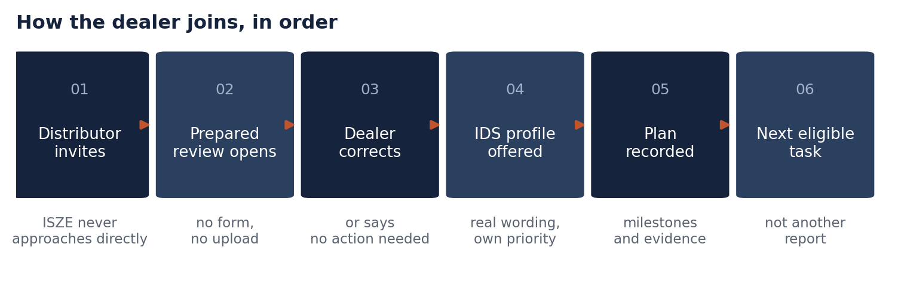
| Return | Why it is hard to get otherwise |
|---|---|
| Its actual IDS answers, in the real question wording, with section and version | The dealer has the questionnaire but not an explorable view of its own record |
| A development priority it chooses, with milestones and evidence it controls | Existing assessment rounds give a score, not a plan the dealer owns |
| A prepared own-business review of its recorded purchasing, with a correction route | Today this arrives, if at all, as a national or distributor-level summary |
| A visible record of who owes the next step, including ISZE and the distributor | Today the dealer cannot see when it is waiting on someone else |
The first two are the strongest dealer assets and they are under-used in the current design. Of the 519 dealers in the ISZE network file, 334 carry a recorded IDS score today. Figure 15 shows their distribution: a minimum of 0, a maximum of 100 and an average of 77.5. That is roughly two-thirds of the known estate with an individual result already on file, and it is the only place in this programme where ISZE holds something a dealer will want to look at that it cannot easily assemble itself.
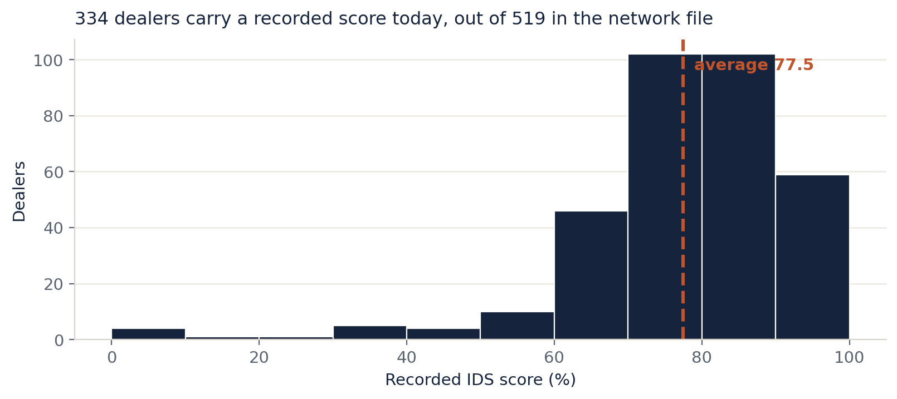
| Step | Score /100 | Why that number |
|---|---|---|
| Dealer accepts the first prepared review | 55 | Reasonable, because it costs ten minutes and arrives finished. It competes with a customer standing at the counter. |
| Dealer corrects the interpretation | 70 | Correction is low-cost and self-interested. This is the most reliable step in the design. |
| Dealer opens and uses its own IDS profile | 65 | The strongest hook in the programme: its own answers, in the real wording, with a priority it chooses. |
| Dealer returns for a second eligible task | 30 | No cash, no visibility gain, no recurring trigger. Habit does not form on goodwill alone. |
| Dealer shares anything beyond a correction | 20 | Requires a reason that has not yet been created. Nothing in the design currently supplies it. |
| Dealer joins as designed today | 45 | The design is credible in its first three steps and unproven after them. |
Three changes, in order of effect. Make the IDS profile the opening, not a later step, so the first thing a dealer sees is its own data rather than a supplier's reading of it. Fund a bounded setup task, so the dealer's own time has a price and the distributor has something to offer rather than something to ask for. Make the return visible, so the dealer can see the answer, the decision and who owes the next step, because invisible follow-through is what ended the previous data requests.
The distributor's position is stronger and simpler. It already has an obligation to report. It already has a rebate linked to reporting. The change being proposed is what comes back.
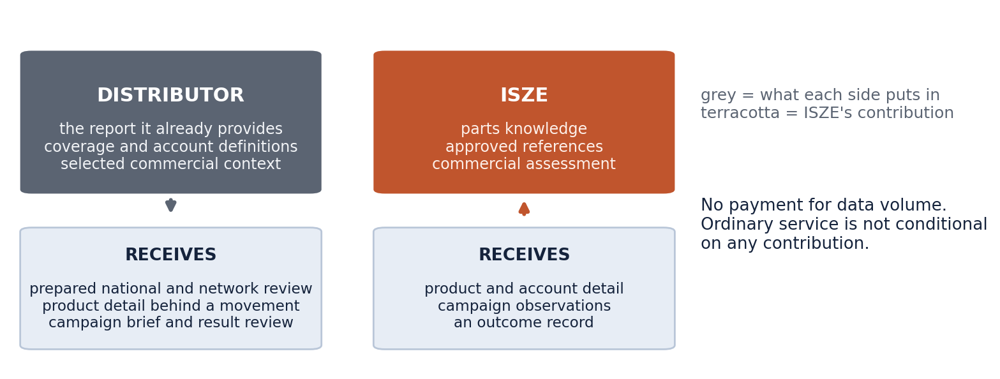
| Return | Frequency | Decision it supports |
|---|---|---|
| Prepared national or network review | Monthly, after a usable submission | Which accounts and ranges deserve attention |
| Product detail behind a movement | On the selected case | Which references and product forms explain a change |
| A range or campaign brief | On the selected initiative | Whether to develop, narrow or protect the offer |
| A tender proposal framework | On a qualified opportunity | Whether to pursue and what support to request |
| A reviewed development record per dealer | On IDS work | Where to direct its own network-development effort |
| Step | Score /100 | Why that number |
|---|---|---|
| Distributor accepts the opening | 75 | Cheap, adds no reporting burden, and the rebate floor already exists. |
| Distributor uses the review internally | 45 | Depends entirely on whether one review answers a question the distributor already had. |
| Distributor selects a case with a named owner | 50 | Requires management attention, which is the scarcest resource in a distributor's year. |
| Distributor shares account-level detail beyond the current report | 35 | Genuinely useful and genuinely sensitive. Needs the boundary in chapter 10 to be real, not promised. |
| Distributor uses Universe to develop its own dealers | 40 | This is the highest-value outcome and the one the design supports least well today. |
| Distributor co-funds participation | 25 | No precedent. Should not be assumed and should not be requested in the first year. |
| Distributor joins as designed today | 55 | A credible, low-cost start with an unproven second step. |
The gap between the 75 for accepting and the 45 for using is the whole problem. Two changes close it. Answer a question the distributor already has, rather than presenting a general capability, because a review that is merely available is a review that is not read. Make the distributor's own dealer development the visible output, because that is the only framing in which the review serves the distributor's commercial interest rather than ISZE's.
519 dealer self-assessments exist today across 19 networks. That is what this network produces when an obligation is attached to a dealer-facing requirement. Anything in this programme that scores below that base rate needs a reason the participant can feel, and the only two reasons available are money and a visible improvement in its own business.
| Do not | Why |
|---|---|
| Pay per submitted record, per row or per disclosed field | Rewards disclosure volume rather than useful work |
| Make ordinary service conditional on contribution | Turns a normal service into a bargaining instrument and destroys the premise |
| Build a public dealer league table | Turnover favours large businesses and self-assessment scores have different coverage |
| Ask for dealer resale prices by default | Not needed for the core review and the most sensitive item on the list |
| Approach a dealer directly | The distributor owns the relationship and the audience decision |
| Count logins or uploads as participation | Neither is evidence that a decision improved |
| Stage | Result | Evidence to move on |
|---|---|---|
| 1. Agree the scope and the portfolio | A clear five-tool portfolio and the written exclusion of routine services | This paper, the presentation and the showcase explain the same proposition |
| 2. Pin the classification release | One named file, version and build date | Reproduce a selected family and product-form view from the pinned release |
| 3. Open two prepared views | An Atlas view and an IDS profile, both prepared before the first invitation | A participant completes a real task and finds it clearer than the existing review |
| 4. Run the dealer sample | Ten dealers across two markets, including one that is reluctant to add reporting work | Correction, useful output, total effort and reasons for non-use, all recorded |
| 5. Run the campaign line | At least two qualifying campaigns against the agreed size filter | Contribution measured on the same scope before, during and after, including returns |
| 6. Evaluate, then extend or narrow | A stated result, favourable or not | Real later evidence, effort and usefulness; not a rendered screen |
No elapsed-week estimate from the earlier support-centred roadmap is inherited as a promise.
Adopt the existing €100,000 route and re-point its campaign element as chapter 4 sets out. In practice:
| Recommendation | Amount | Note |
|---|---|---|
| Named campaign-support line | €60,000 to €90,000 | Inside the €100,000 route; does not draw on engineering or assurance |
| Minimum campaign size to qualify | €150,000 eligible billing | Below this, a single campaign cannot produce enough contribution to justify its own preparation |
| Dealer enablement, spent as accepted tasks | €15,000 to €25,000 | Not spread as a per-dealer entitlement |
| Campaign support named as its own line | Non-negotiable | The current position, that campaign support needs its own approved commercial treatment, is a control and not an answer |
| Route selection | Start at €100,000 | The €300,000 route adds dealer enablement and resilience before the qualifying rate is known |
Go if, at the pilot review, a real participant completed a real analytical task, the output was correct on its source, and the participant can name the decision it changed. No-go if the only evidence is that a screen rendered, a file arrived, or somebody said the demonstration looked good.
It stops. If, after two eligible cycles, no participant can name a decision the tool changed, or if a confidentiality or identity weakness is found that cannot be closed, the programme stops. It does not pause, it does not add a report, and it does not broaden the participant population to look for a better sample. If the incentive that currently produces the file were removed tomorrow, the honest test is whether anyone opens the tool anyway.
The business owner can define the commercial question, design the information exchange, prepare analytical examples and establish what a useful output should contain. Existing AIM, Atlas, PRISM and IDS work is inspected and reused where fit for purpose rather than reproduced as parallel calculations. Specialist work is bounded: access isolation, durable shared records, reliable imports, recovery, or an agreed connection to company systems. Each is a task with an accepted deliverable and a handover.
There is no backend on this machine. There is no shared case service, no production identity and no attachment storage. The prototype deliberately refuses an authenticated identity rather than inventing authority, and says so on every result. A browser-side allowlist is not access control and is not described as one anywhere.
The access rules that matter — only the authorised distributor sees its selected accounts and terms, only the dealer sees its own permitted record, and no distributor sees another's submissions — are enforced by the operating application and by the contents of exports, not by hidden menus and filters. Until that is implemented and independently reviewed, the first shared use stays distributor-led and document-based.
Universe is a commercial programme offered by ISZE to European distributors and through them to dealers. Under the European motor-vehicle block exemption framework, agreements using market-share thresholds of 30% or 40% are valid until 31 May 2028, after which the motor-vehicle-specific regime lapses unless replaced. Nothing in this paper is a legal determination, and none of it has been reviewed for competition-law compliance.
Three design rules follow and are proposed as standing constraints:
This must be reviewed by the responsible function before any shared output is used with a participant.
The recurring standard is price-free. Selling prices, resale margins, customer identities, vehicle identifiers, full inventory and workshop job cards are not silently added to it. Quantity-only data can support valuable analysis without becoming recorded resale revenue. Where a financial outcome is needed, a locally calculated aggregate may be sufficient, and an aggregate is not automatically anonymous.
Corrections have their own rule: a corrected submission replaces its declared predecessor for the affected scope, identical re-imports add no activity, annual controls are not added to monthly observations, and national controls are not added to their dealer detail.
| Observation | Basis | Source |
|---|---|---|
| ITUK brake-pad billing €347,389.58 (2024) to €302,366.25 (2025); quantity 4,562 to 3,402 | Full calendar years, source category | ISZE category-mix aggregate, snapshot 19 September 2026 |
| Three selected brake categories fell €47,068.77; pads are 95.7% of it | Same period and basis | Same |
| Portugal clutch-kit billing €29,959.87 to €31,702.47 combined; Genuine €2,901.92 to €2,057.86 | Full calendar years, source category | Same |
| Network parts billed to distributors 2025: €32,381,311.55 across 22 distributors | GPS parts billed, supplied basis | ISZE GPS distributor file, 2025 rows |
| PMS billed €6,654,582.64 in 2025; 8.4% of euro at least 20% under reference, 2.8% at least 30% | PMS lines with a reference price, 24 distributors | ISZE campaign-suspect summary, 2025 |
| 519 dealers with an IDS record across 19 networks; 334 scored, average 77.5 | Dealer network file | ISZE IDS dealer network file, 20 September 2026 |
Value fell less than volume in the ITUK pad line, which means mix, price and coverage deserve examination before any concession is considered. Combined Genuine and BVP grew in Portugal while Genuine fell, which means a Genuine-only view would have produced the wrong campaign. The distributors with the highest deep-discount shares are not the largest ones, which means a campaign programme without a size floor would concentrate in small markets.
The quantity thresholds, the contribution figures and the hurdle table are arithmetic on stated inputs. They are not estimates of customer response. Where a cost is unknown it is printed as unknown; an empty cost is not zero.
There is no reliable measured price response in the current evidence base, and the paper does not pretend otherwise. It is worth stating what has been measured, because silence lets a reader assume whatever responsiveness suits the conclusion being argued.
| Product family, 2024 to 2025 | Price effect on quantity | Reading |
|---|---|---|
| Maintenance service | Steeply negative, but with a large standard error and almost no explanatory power | Direction only. Not a usable elasticity. |
| Brakes | Flat to slightly positive, with a large standard error | Inconclusive. |
| Lubrication | Not identified, because the list-price movement was nearly uniform across the pairs | Use the median quantity move instead. |
The measurement is of the stocking response from ISZE to the distributor, not dealer-market demand, and it does not control for demand shocks. Approximately €233,000 of the brakes change sits in price-up with volume-down, €172,000 in price-up with volume-up, and €335,000 in volume-down with price flat. Measured, year-on-year pairs on 2024 and 2025, direction and rough magnitude only.
The practical rule is therefore: no scenario in this programme forecasts a demand response. A threshold says what would have to happen. It does not say what will.
The customer's reason for purchasing elsewhere. Whether a distributor's dealer network covers the vehicles that buy the part. The gross-profit effect of a range change before the campaign is run. The qualifying-campaign rate that chapter 4 needs. Whether a dealer will return after the first task.
| Term | Meaning in this paper |
|---|---|
| Parts billed | ISZE sales to the stated distributor on the stated source basis |
| Sales to dealer | The distributor's recorded onward purchasing stage, at its own source and period |
| Parts gross profit | Revenue less documented parts purchase cost of the quantities sold; freight, duty, overheads and distributor rebates excluded |
| Campaign contribution | Parts gross profit less additional campaign costs not already included |
| Reference price | The applicable list reference for the stated entity and period; a reference valuation is not a transaction |
| Deep concession | A billed price at least 20% under the reference price, on a line with a reference price |
| Eligible fleet | The vehicles supported by the selected application evidence, never allocated from a national total |
| Qualifying campaign | A campaign whose eligible billing base exceeds the stated minimum size |
| Progress | Project implementation, which is not a reassessment and not a commercial outcome |
| Measured / inferred / proposed / unknown | The four evidence labels used throughout this paper |
Keep calendar and fiscal periods distinct: Isuzu's fiscal year runs April to March, while the historical examples here compare full calendar years. The billing reference for 2026 runs through 30 June 2026 and is a half year, not a full-year observation. A missing month is not filled with zero.
ITUK is not IUK, and UMI is not UTI. Country aggregation must not silently combine their fleets or purchasing behaviour. A purchasing account is not automatically a physical workshop, and a dealer company can have several sites. The original transacted part reference remains available alongside its classification and any separately governed successor relationship; a later relationship must not silently rewrite a historical transaction.
| Code | Source and use |
|---|---|
| U | Business-owner scope instruction, 22 September 2026: distinctive commercial tools, with ordinary availability, BVP and day-to-day support outside the programme |
| W | Universe White Paper 1.1 revised, 21 September 2026. Source for analytical, participation and access distinctions |
| C | Commercial and participation revision, 22 September 2026. Source for participation history, category examples and funding alternatives |
| R | Implementation roadmap, 22 September 2026. Source for reuse and acceptance principles |
| M | Supplied category-mix aggregates, snapshot 19 September 2026. Source of the ITUK and Portugal comparisons |
| N / O | ISZE numerical and operating context, 19 September 2026 |
| A | AIM Pricing Decisions component, confirmed financial rules, 22 September 2026. Source of the parts gross-profit definition |
| P | PRISM showcase, interaction reference only. Its historical totals and projections are not imported |
| 3.0 | Universe Commercial Vision 3.0, 22 September 2026. Withdrawn and superseded by this edition |
| T | Universe Commercial Tools Edition, 22 September 2026. Source of the scope boundary, adopted here. Its five-tool portfolio is adopted; its separate existence as a parallel product story is withdrawn |
| E | New proposals in this edition, 23 September 2026 |
New in this edition, and the source of the change. The scope boundary adopted from [T] and absent from [3.0]. The single portfolio and the decision route under "How to read this". The data-led chapters 3 and 4, including the network concession picture, the hurdle table and the per-dealer price. The participation assessment and the base-rate comparison in chapter 8. The elasticity disclosure in 11.4. The stop condition in 9.3.
Design and production. Charcoal #24282C, Isuzu red #D71920, navy #15233C, terracotta #C0552D, Arial or a metrically compatible substitute. No font files, raw billing or full price lists accompany this paper. The charts are generated from the named source files at build time; the generator and its checks sit in _build_30.
Prepared 23 September 2026. Withdrawn documents remain on disk for reference and must not be quoted as current.